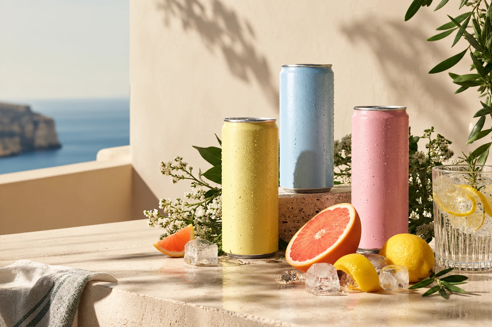
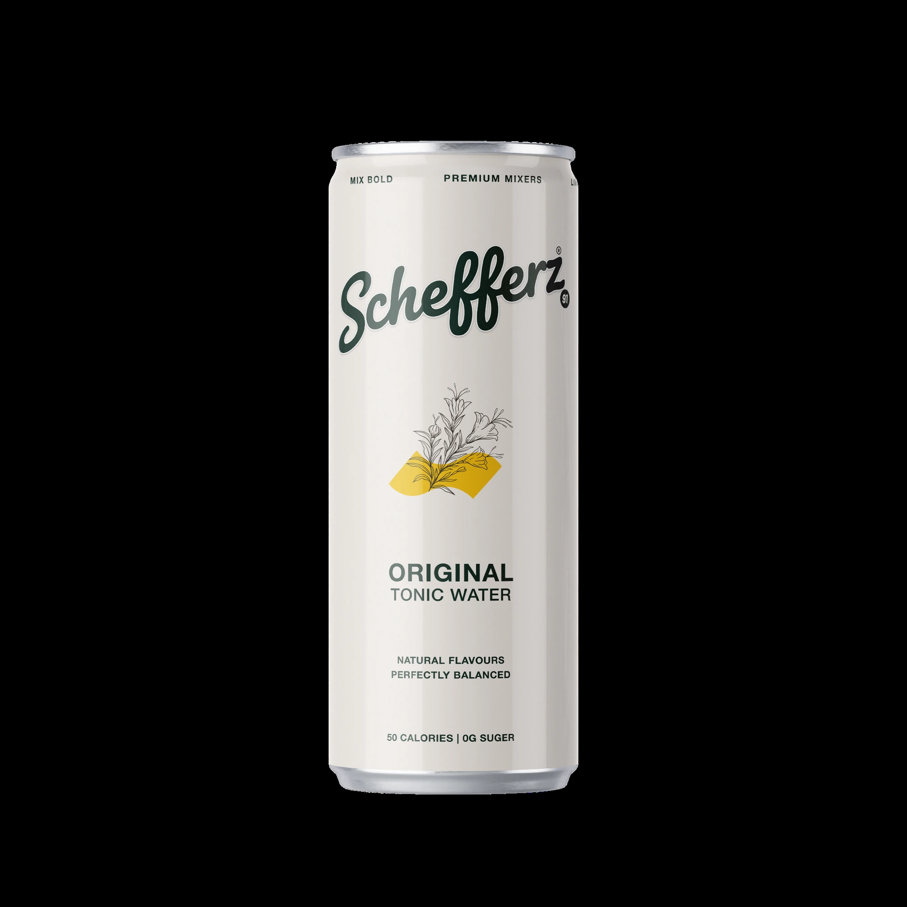
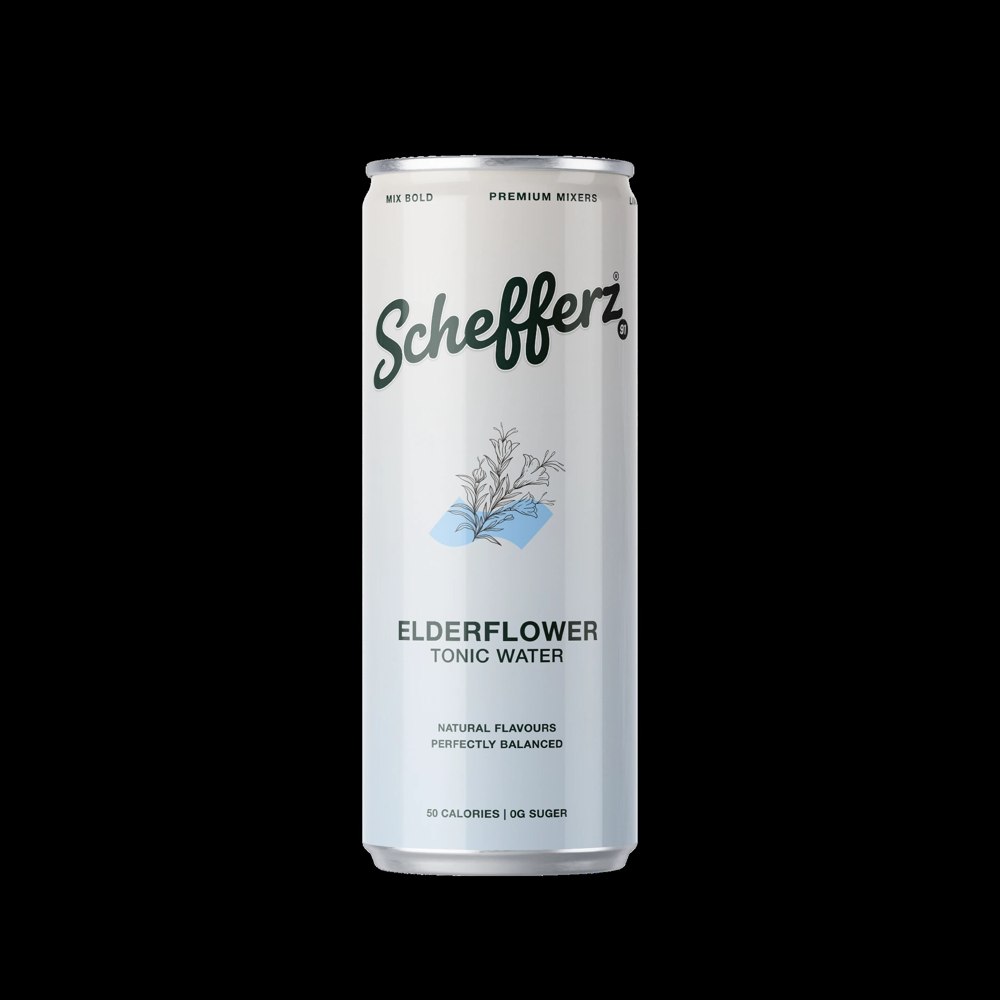
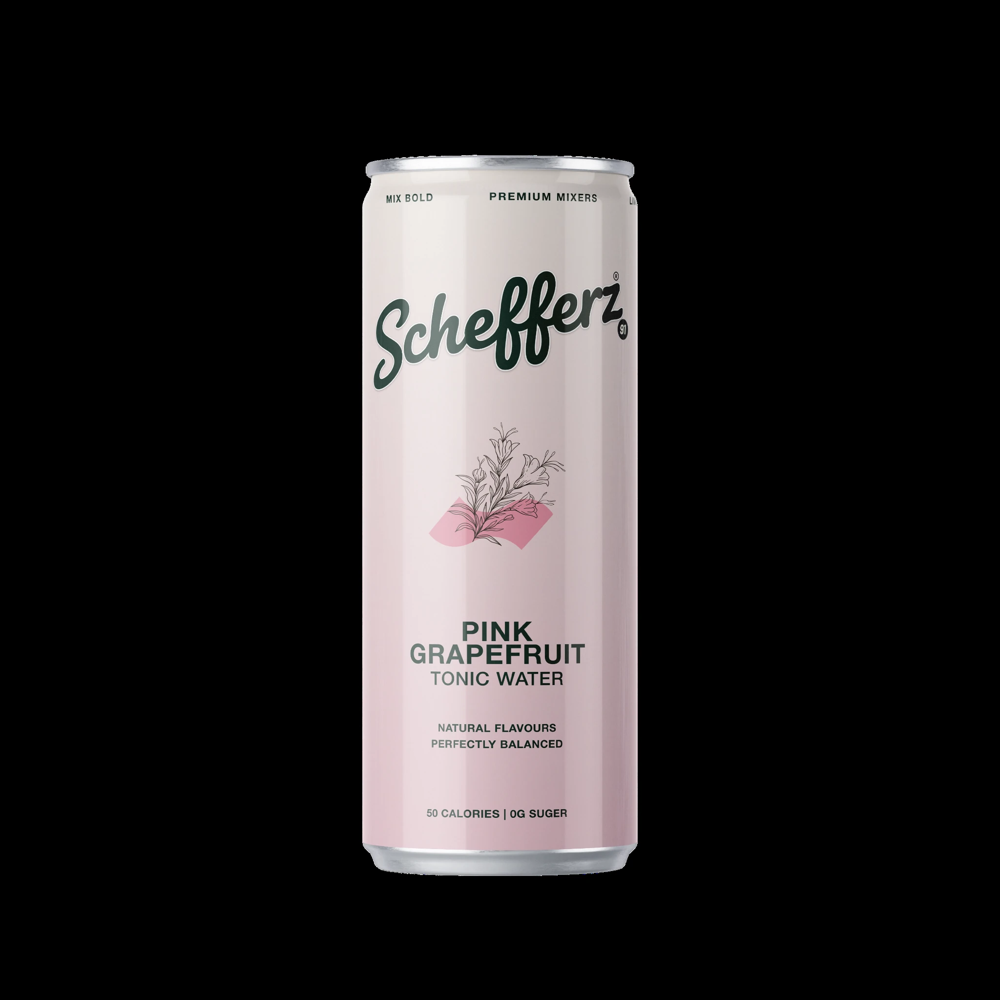

↗
↗
A classic, considered tonic profile designed to bring balance to the glass. Clean in presentation, versatile by nature.
Discover this flavour → Explore the range ↗
Explore the range ↗
SCHEFFERZ · PREMIUM MIXERS
Thoughtful mixers for good company, better rituals and the little details that make a drink feel like an occasion.

THE SCHEFFERZ MOOD
From the first crack of the can to the last slice of citrus, make the everyday feel a little more considered.
Meet the range ↗
ORIGINAL
ELDERFLOWER
PINK GRAPEFRUITTHE LINE-UP
↗
A classic, considered tonic profile designed to bring balance to the glass. Clean in presentation, versatile by nature.
Discover this flavour → ↗
↗
A floral expression with a softer visual character—made for slow pours, bright garnishes and thoughtful serves.
Discover this flavour → ↗
↗
A citrus-led expression with a fresh, vivid personality. A colourful companion to an uncomplicated, well-made serve.
Discover this flavour →THE ORIGINAL / NO. 01A DIFFERENT KIND OF MIXER
We believe the mixer deserves a place in the spotlight. SCHefferz is built around a simple idea: bring intention to the pour, make space for good company, and let the small details do their thing.
Meet SCHefferz ↗THE SCHEFFERZ POINT OF VIEW
A clear point of view, from the can in your hand to the drink you make with it.
Flavours with their own personality, ready to find their place in your ritual.
For a table full of friends, an unhurried evening or a moment just for you.
YOUR NEXT SIGNATURE SERVE
A chilled can, a glass you love, a little citrus or a favourite garnish. Start with the essentials and take it from there.
Find your flavour ↗ THE FUTURE UNIFORM / 01
THE FUTURE UNIFORM / 01
MORE THAN WHAT'S IN THE GLASS
A future home for the pieces that travel with the brand: tees, caps, hoodies, joggers and the ice bucket that belongs at every gathering.
Explore SCHefferz Goods ↗Merchandise is in development. No items are available to purchase yet.NOTES ON GOOD TASTE
THE ART OF THE POUR
SERVE NOTES
GOOD COMPANY